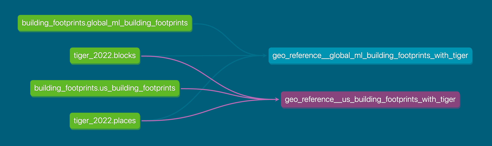

dbt (data build tool)¶
Part IV: dbt docs and mart models¶
dbt docs¶
A key feature of dbt is the automated generation of documentation and lineage from your project. The source and ref functions we taught you about allow us to see the connectedness of our data in a DAG (Directed Acyclic Graph) or lineage graph. We can see from source all the way to a downstream model what models and other sources are dependencies.
Here's an example DAG from our team's data-infrastructure project.

Rendering your docs as static HTML¶
dbt reads your SQL models and YAML configuration files and produces a static HTML document from them. This documentation can then be hosted in a number of places, including dbt Platform, GitHub Pages, Azure Static Web Apps, etc. Here is an example that demonstrates dbt docs being hosted on GitHub Pages and the code that makes it happen.
To generate docs locally, run: dbt docs generate then dbt docs serve
Mart models¶
Purpose: Create consumable datasets tailored for specific business or program needs. Mart models are also known as an entity layer or business layer.
Key characteristics:
- Represent a specific entity or concept at its unique grain
- Wide and denormalized (fewer joins for end users)
- Program-friendly naming
- Optimized for querying and reporting
Examples:
stations(one row per station)lab_results(one row per lab result)samples(one row per sample)parameters(one row per water quality parameter)
Organization and naming:
- Saved in a
marts/subdirectory - Often organized by business domain (e.g.,
marts/water_quality/,marts/geo/) - Plain English based on the concept/entity
- No prefixes for model files needed:
stations.sql, notmart_stations.sql
Materialization:
- Tables (marts need to be fast for end users)
- Consider incremental for very large datasets
Designing good mart models¶
Marts are intended to be the final layer in a modular data modeling approach. You start with staging models that clean your data, then intermediate models (if needed) that apply more complex transformations and joins that can be reused across marts. Marts standardize business or program logic and metrics for a specific entity at its unique grain.
We recommend a thorough read of dbt's article on understanding marts, and we've summarized it for you below.
- Clear grain: one row per what?
- Business-friendly names:
stn_nmbecomesstation_name - Complete context: all fields a user needs are included to avoid further joins in their dashboarding tool
- Well tested: test the grain (uniqueness on key columns)
- Well documented: explain what the mart represents and any calculated fields
Summary of the layered modeling approach¶
| Layer | Purpose | Transformations | Naming |
|---|---|---|---|
| Staging | One-to-one with source | Cleaning, renaming, type casting | stg_<source>__<entity> |
| Intermediate | Reusable business logic | Joins, aggregations | int_<description> |
| Mart | Business-ready datasets | Denormalization, final calcs | Plain English |
Practice¶
Create a mart model and YAML docs¶
Instructions
Now you'll create a business-ready mart model that represents stations with aggregated metrics. This mart will answer key questions like: Where are our stations located? When was each station first sampled?
For this mart we have woven hints directly into the SQL since it is a bit more complex than models you have built so far.
SQL:
- If not already on your working branch, switch to it:
git switch <your-first-name>-dbt-training - Open
transform/models/3_marts/stations.sql, you should see a basic select statement - Write a SQL query using
int_water_quality__lab_results_enrichedvia theref()macro to:
One CTE could do the following:
- Return one station per row
- Use
group byto aggregate to the station level
- Use
- Keep these metadata columns (
station_id,full_station_name,station_type,county_name,latitude,longitude,first_sample_timestamp,last_sample_timestamp,days_since_last_sample)- Use
ANY_VALUE()to pick station metadata columns (they're the same for all rows of a station)
- Use
- Count all samples as
total_samples - Count distinct parameters as
unique_parameters_tested- Use
COUNT()for this and above
- Use
Another CTE or two could do the following:
- Identify each station's top occurring parameter as
top_parameteralong with its sample count astop_parameter_sample_count- Use the
RANK()window function to rank parameters by frequency within each station - order by parameter sample count descending
- this will result in ties which normally in real world scenarios we would break, but we just want you to get practice with window functions
- Use the
You can then join your logic in a final CTE
select *at the end from your last CTE then sort bytotal_samplesdescending- Your output should have 13 columns
YAML:
- Document your mart model in the
transform/models/3_marts/_water_quality.ymlfile - Add a description explaining this model and its grain
- Add column names
- Add column descriptions for all fields (you can copy/paste from
_int_water_quality.ymlwhere definitions remain unchanged)
Stuck? Check out the answer for this exercise.
- Lint and Format your files
- You can lint your SQL files by navigating to the transform directory and running:
sqlfluff lint models/3_marts - You can fix your SQL files (at least the things that are easy to fix) by remaining in the transform directory and running
sqlfluff fix models/3_marts
- You can lint your SQL files by navigating to the transform directory and running:
Any of the above steps may modify your files requiring you to stage (git add) them again.
- Check to see which files need to be added or removed:
git status - Add or remove any relevant files:
git add filename.extorgit rm filename.ext - Commit your code and leave a concise, yet descriptive commit message:
git commit -m "example message"- During this step pre-commit may catch an error you missed. It may auto-fix your file or you may have to do it yourself. Regardless you will have to repeat
git add...(for each modified file) andgit commit....
- During this step pre-commit may catch an error you missed. It may auto-fix your file or you may have to do it yourself. Regardless you will have to repeat
- Push your code:
git push origin <your-first-name>-dbt-training
- Click the Lint and Fix buttons to check and edit your files
- Save any changes made by clicking "Save" or using a keyboard shortcut
- Commit and sync your code
- Leave a concise, yet descriptive commit message
Knowledge check¶
Question #1¶
Question #2¶
Question #3¶
mart_.